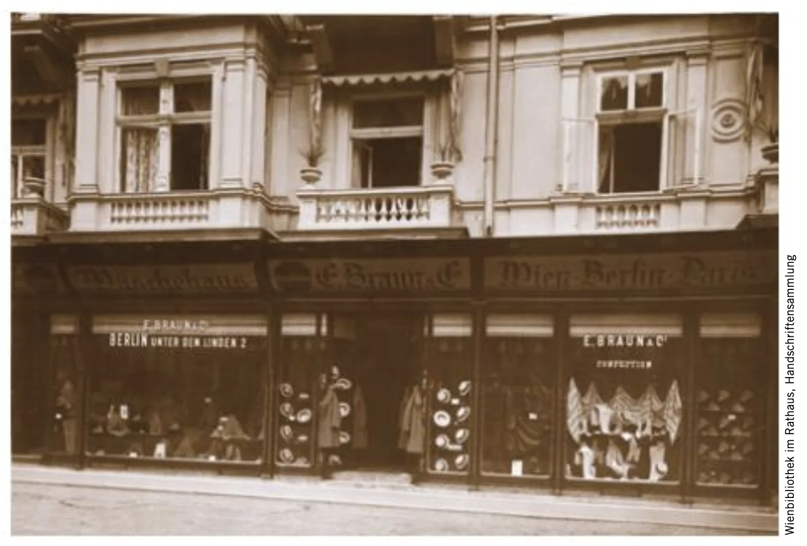
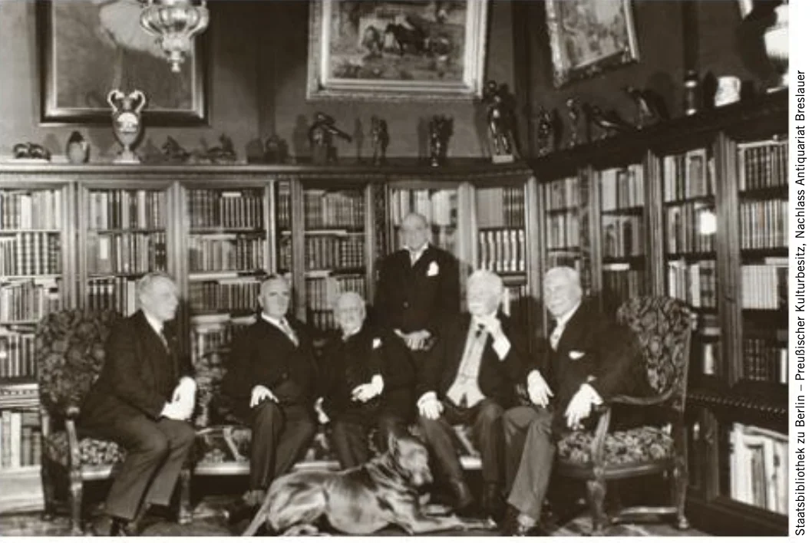
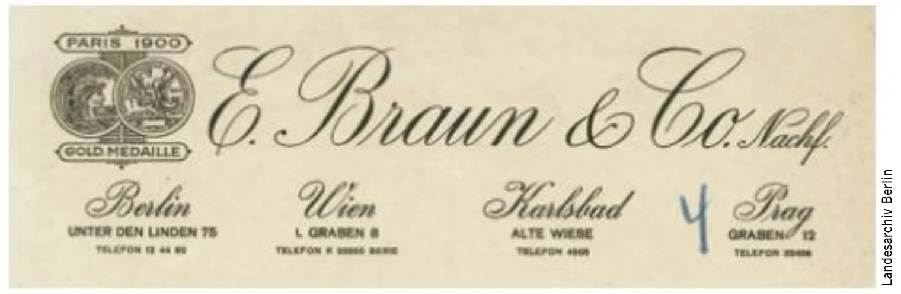

Interactive Historical Archive
An interactive map documenting over 10,000 businesses that flourished in Berlin before their systematic destruction during the Nazi regime.
Explore the timeline, read individual stories, and witness how a vibrant commercial landscape was erased from history.

Three ways to engage with this historical database
Deeply researched narratives with photographs, documents, and survivor testimonies bringing individual businesses to life.
Browse the complete historical database with detailed information about each business, owner, and location.
Use the timeline slider to watch the map change month by month from 1900 to 1945.

The interactive timeline lets you see exactly when businesses opened, came under pressure, and ultimately closed. Each color tells a story:

Read about the Braun fashion empire, the Breslaur pharmacy, and other businesses whose stories have been meticulously reconstructed.
Each featured story includes archival photographs, historical documents, and detailed narratives about the families who built these enterprises.
Choose your path through history: curated narratives or the complete archival database.